Getting started
Corillo is a place to write documents together with your AI agents, the way you'd work on a document with colleagues.
What Corillo works on
Corillo opens Markdown files, whose names end in .md. Markdown is plain text with a few marks for formatting, such as # before a heading. AI agents write it naturally, and almost any app can open it. In Corillo you don't need to see the marks: you work on the formatted document.
Open a document
- Choose File > Open… (Command-O).
- Drag a file onto Corillo's window, or onto its icon in the Dock.
- Choose File > Open Recent, or click one of the recent documents on Corillo's start screen. Corillo's icon in the Dock lists them too (Control-click it), as Apple menu > Recent Items does, also while Corillo isn't open. Removing one from Corillo's list, or clearing the list, leaves them there.
- In Finder, Control-click the file and choose Open With > Corillo.
When no document is open, the start screen shows your eight most recent documents as cards: a small preview of the top of each, its name, the folder it's in (as Finder shows it, for example Documents › Work) and when it last changed. Click a card to open it, or move between cards with the arrow keys and press Return. Clear list empties the list.
Under its name, a card says where the document stands, in the words its comments use once it's open: "3 comments waiting for you" when an agent has answered or left a note, or "2 comments for Claude, not sent yet" when you've written comments that haven't gone to an agent. Documents with something waiting for you come first, each group with the one you opened last at the front; File > Open Recent keeps the plain order. A document no agent has worked on says nothing. A closed document is never shown as being edited: an agent works only on documents that are open.
A document you renamed or moved in Finder while it was closed is found where it is now: its card shows its new folder, it opens with its comments and history, and Open Recent follows it. A document Corillo can't find (deleted, in the Trash, or somewhere it can't follow, such as another drive) says it can't be found. Choose Find it… to show Corillo where it is now: if it's the same document, its comments and history come with it. If you choose a different file, Corillo says so and can open it as a document of its own, and the card stays. Remove from list takes the card off.
Each document opens in its own tab. The tabs appear once a second document is open; with just one, the window's title shows its name. With more tabs than fit, the tab bar scrolls sideways, always keeping the tab you're on in sight, and All tabs (the arrow at the bar's right end) lists every open document: choose one to bring it to the front. A tab whose document isn't saved (see "Not saved") shows a small red-brown dot before its name: rest the pointer on it to see why. From the keyboard, press F6 until the keyboard is on the tab bar (see Moving around the window): it lands on the tab you're on, Left and Right move from tab to tab, Return or Space brings one to the front, and Delete closes it. To put the tabs in the order you want, drag a tab along the bar: the others make room, and it stays where you let go and comes to the front. Press Escape while dragging to put it back. Or choose Window > Move Tab Left or Move Tab Right (Control-Shift-Command-Left Arrow or Right Arrow) to move the tab you're on one place; on the tab bar, those keys move the tab the keyboard is on. Show Next Tab, Show Previous Tab and Command-1 to Command-9 go by your order. To have Markdown files always open in Corillo, select one in Finder, choose File > Get Info, pick Corillo under "Open with", then click Change All.
Corillo shows a document's name without .md: on the tabs, in the window's title, on the start screen and in the Window menu. The full name is still there where it tells files apart: in Finder, in the Open and Save dialogs, and in what Copy path copies.
Quit Corillo with documents open, and they open again the next time you start it, in the same order, with the same one in front, even when an agent starts Corillo for you. To start on the start screen instead, close the tabs (or the window) before you quit. A document that was moved is opened where it went, if Corillo can find it. One it can't find or can't read, one on a drive or network share that doesn't answer, or one larger than 10 MB isn't opened: a notice at the bottom of the window names it, and you can open it from File > Open Recent when you're ready.
To start a new document, choose File > New Document… (Command-N), or New document… on the start screen, give it a name and pick a folder. It's always a Markdown file: a name typed as "Plan.docx" makes Plan.md. It opens, empty, in a new tab, and the page says how to start: type, paste from Word or Google Docs, or click Copy a request and paste it in your agent's chat, saying what to write. The request names the document and its folder. Those words are on the page only, never in the file, and they go as soon as there's something on the page. Or ask your agent to write a draft and open it in Corillo.
Close a new document with nothing in it, and Corillo takes the empty file away again, so no empty "Untitled" is left in the folder. A file you or an agent wrote in is always kept, and so is one you clicked Copy a request on (your agent may be about to write it), and any empty file Corillo didn't make.
Open a Word document
Open a Word document (.docx) the same ways: File > Open…, a drop on the window or on Corillo's icon in the Dock, or Open With > Corillo in Finder. Corillo works on Markdown files, so it asks once, then makes a copy next to the Word document and opens that: for Offsite notes.docx, the copy is Offsite notes.md. The Word file isn't changed. Cancel leaves everything as it was. This needs macOS 15 or later: on macOS 13 or 14, Corillo says so when you try.
The copy keeps the headings, bold and italics, lists, tables, links and pictures. Tracked changes are accepted, as Accept All would in Word. Word's own comments stay in the Word file and aren't copied; a notice on the copy's tab says how many there are. The pictures go in a folder next to the copy, named after it (Offsite notes images). A few kinds Corillo can't show, such as a chart pasted from Excel as a drawing, become links to their files. In History, the copy's first version says "Made from Offsite notes.docx".
Exporting the copy to Word uses the Word document's styles, so it looks like the original: its fonts, colours, headings, page and header. Nothing else of the original goes in, so a picture you took out of the copy isn't in the export, and Track Changes and editing restrictions aren't turned on. Corillo keeps those styles when it makes the copy, so the export still works after the original is moved or deleted. An export never writes over the original, yours or your agent's: Corillo suggests a new name (Offsite notes 2.docx), and if you choose the original's name it says so and saves nothing.
If there's already an Offsite notes.md next to the Word document, Corillo asks whether to open it or make a new copy (Offsite notes 2.md); it never writes over a file. If it isn't allowed to save in the Word document's folder, it asks where to save the copy. A document in Word's older format (.doc), or one protected with a password, can't be copied: open it in Word, save it as a .docx without the password, then open that.
It saves itself
Corillo saves as you type, so there's no Save command and nothing to remember. The status bar at the bottom of the window says Saved. Your document stays an ordinary Markdown file that any other app can open.
To rename a document or move it to another folder, choose File > Rename or Move… and its pictures go with it. Changing only its capitals (plan.md to Plan.md) works too. An agent that still uses the old name is told the new one. You can also rename or move it in Finder or another app, even while it's open: the tab follows it, and its comments and history go with it. Its pictures folder stays where it was unless you move that too.
Two views
Formatted shows the document as it reads, with real headings, bold and lists. This is where you'll spend most of your time. Markdown shows the plain text with its marks, and a formatted preview beside it. Switch with the two buttons at the right of the toolbar, with the View menu, or by pressing Command-/. Comments show in both views.
In the Markdown view, the text and the preview move together: scroll either one and the other follows, so the same part of the document is side by side. As you type, the preview shows what you typed beside the line you're on. Command-Z and Shift-Command-Z act where the keyboard is: in the text they undo and redo your edits there, even while a comment you've started is open beside it, and in a comment box only that box's typing. Edit > Undo and Edit > Redo, chosen with the mouse, do the same.
To give either side more room, drag the line between the text and the preview. Double-click the line to make them even again. In a narrow window with the comments open, the preview steps aside so the text has the room; make the window wider or hide the comments to bring it back. To learn what the marks mean, click Markdown help at the bottom of the window, or see Markdown at a glance.
The toolbar
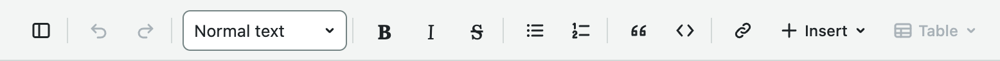
At the left end, the Outline button shows and hides the outline of the document's headings (see The outline); it looks pressed while the outline is on. Then the buttons for writing, in groups: undo and redo; the paragraph style (Normal text, or Heading 1 to 4); bold, italic and strikethrough; bulleted and numbered lists; quote and code block; then what you put in: a link, the Insert menu, and the Table menu for a table you've put in.
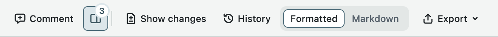
At the right, for working with your agents and on the document as a whole: Comment, then the Comments button beside it, which shows the number of open comments and hides or shows the panel; Show changes and History; the two views; and Export. Rest the pointer on any button to see its name and shortcut.
In a narrower window the toolbar stays on one row. First the buttons with names (Insert, Table, Comment, Show changes, History and Export) show only their icon. Then the ones used least move into More, the three dots just after the writing buttons, which also holds Read aloud at its end: Export first, then Quote and Code block, the Outline button, the Table menu, Strikethrough, Redo, the Insert menu, Show changes and History, Link, and last the lists. More lists them with their shortcuts, ticks what's on, and greys out what doesn't apply, just as the buttons would; Insert, Table and Export open their own menus beside it. Undo, the paragraph style, Bold and Italic, Comment, Comments and the two views always stay on the bar.
Everything in the toolbar is in the menu bar too, with its keyboard shortcut: the Format, Insert and Table menus for writing, the View menu for the views, comments, changes and history, and the Review menu for going from comment to comment. A menu item is greyed out where it doesn't apply, for example the Table menu outside a table. To reach the toolbar from the page with the keyboard, press F6 (see Moving around the window).
The status bar
The bar at the bottom of the window shows the number of words (with words selected, "4 of 56 words"; it counts what Word would count in the exported document, so not the document details, link definitions, hidden comments or Markdown's signs), whether the document is saved, how many comments are open (click it to show or hide them), and Copy path. When you zoom, it shows the zoom level too: click it to go back to 100%. In a narrow window, Copy path makes room for whose turn it is; it is also in the File menu.
Once an agent has worked on a document, the bar also says whose turn it is, beside Saved: "With you" when the document is yours to edit, or "Claude is editing" (with a dot in the agent's colour) while an agent has it. On a document no agent has touched, it says nothing. After an agent's turn it also counts the comments with something new for you, for example "With you · 4 to read", until you've looked at each one. While an agent is waiting for your review, it says so: "Claude is waiting for your review".
Bring in your agents
Connect the agent tools you use once, and they can open your documents in Corillo and work on them with you. Corillo offers this the first time it opens, in a box called Connect your agents. To come back to it later, click Connect your agents on the start screen, or choose Help > Connect Agents… It connects Claude Code, Claude Desktop, Codex, Cursor, VS Code, Gemini CLI and GitHub Copilot CLI with one click. Of these, only Claude Code has been tried in real use so far.
An agent tool is the app where you chat with an AI agent. If none is on your Mac yet, the box says so and names Claude Desktop first, the Claude app for Mac: install it and sign in. The others it works with are under Other tools. Once one is installed, come back to Connect your agents to connect it.
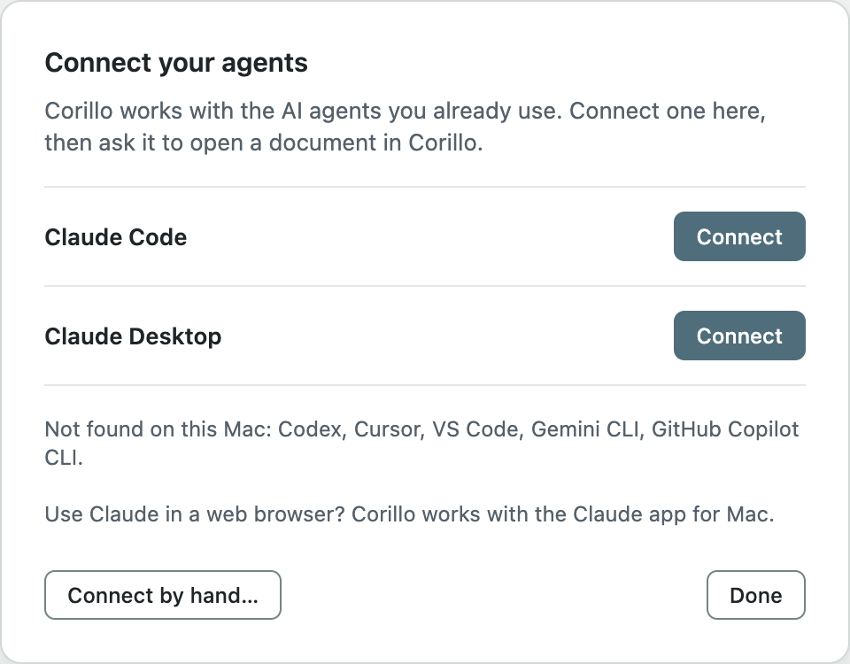
Click Connect beside each tool you use. The tool then says Ready, and what to do so it sees Corillo: quit it completely (Command-Q, not just closing its window) and open it again, or start a new session. Under that is a first request to try, with a button to copy it: paste it in a new chat. The moment the tool's agent reaches Corillo, the screen says Connected. If nothing has reached Corillo two minutes later, it says what else to try.
Later, the screen says Connected beside a tool while one of its sessions is using Corillo, and Ready the rest of the time. Both are fine: Ready means the tool will find Corillo the next time its agent needs it.
Corillo works with the Claude app for Mac, not with Claude in a web browser, which can't reach apps on your Mac. If a tool isn't listed, see Connecting an agent by hand.
Your first document with an agent
One round from start to finish. You need an agent tool connected to Corillo (see Bring in your agents). An agent tool is the app where you chat with an AI agent.
1. Get a document in front of you
In your agent's chat, ask for a short draft and say where to save it, for example: "Write a one-page plan for a team offsite, save it in my Documents folder and open it in Corillo." (Connect your agents offers that one to copy.) The draft opens in Corillo. If Corillo wasn't open, it starts by itself in the background: click its icon in the Dock.
Or start the document yourself: choose File > New Document…, click Copy a request on the empty page, paste it in the agent's chat and say what to write.
Already have a document? Open it in Corillo and tell the agent its name: "offsite.md is open in Corillo." Or click Copy path at the bottom of the window, type "Open this in Corillo:" in the chat and paste.
The first time, your agent tool may ask whether the agent can use Corillo. Allow it, and if it offers to remember that, say yes.
2. Read it and leave comments
Select words you want changed, click Comment in the toolbar, say what you want, and click Post. For a note about the whole draft, click Comment with nothing selected. Take your time: the agent doesn't look until you hand it back.
3. Hand it back
Click Send to Claude at the top of the Comments panel (or choose Review > Send to Claude, Shift-Command-D). Claude Code can wait for your review in Corillo, so the agent starts on your comments straight away. Other tools, such as Claude Desktop, only answer when you write in their chat, so nothing is waiting: there the button says Copy for Claude. It copies a sentence with the document's name and where it is, for you to paste in the agent's chat. Or just say "There's feedback in the document" in the chat.
While it works, a notice at the top says so, for example "Claude is editing", and a small coquí hops on the document's tab. You can keep reading and commenting, or go on to another document.
4. Read what it did
When the agent finishes, a line at the top says so, for example "Claude is done. Back to you. 3 comments to read." The agent has replied on each comment to say what it changed. Go through the comments in the panel one at a time: click one, and the words it changed for that comment are highlighted on the page.
- Right? Click the tick in the comment's top right corner to resolve it. It's done, and its card is hidden.
- Not yet? Reply and say what's still missing.
To see every change at once, click Show changes.
If you replied or added comments, go back to step 3. Repeat until you're happy.
5. Share it
Click Export at the right of the toolbar and choose Export to Word or Export to PDF.
More on each step: Working with an agent
Working with an agent
Your agent runs in its own app, such as Claude Code, Codex or Claude Desktop. You talk to it there, in its chat. In Corillo, you and the agent talk through comments, like colleagues reviewing a document. Corillo has no chat of its own.
Point it at a document
- In Corillo, click Copy path in the status bar (or choose File > Copy Path).
- In your agent's chat, type Open this in Corillo: and paste.
The document opens in a new tab, without pulling you away from what you're doing. If it's already open in Corillo, its name is enough: "Q3 plan is open in Corillo."
For a new document, ask for a draft and say where to save it: "Write a short proposal for the new office, save it in my Documents folder and open it in Corillo."
If you keep notes about a document in the same folder, in a file named context.md, brief.md or README.md, the agent is pointed to them the first time it opens or reads the document. You don't need one.
If your agent doesn't seem to know about Corillo, see My agent can't see Corillo.
Two ways to work
- The agent drafts, you review. Good for shorter documents. Ask for a draft, read it, and leave comments.
- Section by section. Good for long documents you'll put your name on. Agree an outline in the chat, then have the agent write one section at a time while you comment, and move on when it's right.
Leave comments
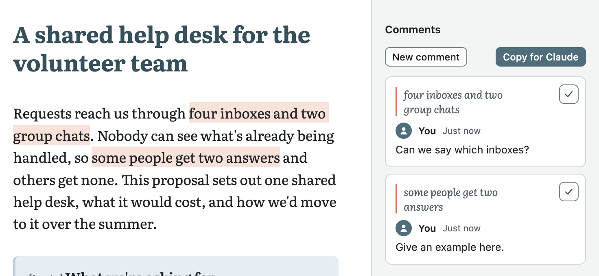
Select some words, then click Comment in the toolbar or New comment at the top of the Comments panel, choose Insert > New Comment, or press Option-Command-M. Type your comment and click Post (or press Command-Return). The cursor goes back to the end of the words you commented on, with nothing selected, so you can go on typing. Comments appear in the Comments panel beside the page, in the order of the words they're on, and the words are shaded in the page. Click any part of a comment to go to its words; click the words to find the comment. The comment you're on stands out: it's shaded blue-grey, with a thick blue-grey bar down its left side, and its quote is shaded the same coral as its words in the page. The panel scrolls on its own, and keeps what you're typing in sight; its top, with New comment and Send to Claude, stays in sight as the comments scroll under it. To make the panel wider or narrower, drag its left edge; double-click the edge to put it back. The History panel takes the same place and width, and Corillo remembers it. Starting a comment while History is open brings the comments back.
The panel is open when you start. To hide or show it, click the Comments button beside Comment in the toolbar (it shows the number of open comments) or the number of comments in the status bar, or choose View > Hide Comments or Show Comments (Control-Command-M). Corillo remembers your choice, for every document; it shows the panel again when you start a comment or an agent writes one.
With nothing selected, your comment is about the whole document. Whole-document comments come first in the panel, then any whose words can't be found any more. Clicking one takes you to the top of the document.
In the Markdown view, the comments are beside the preview. Select words in the Markdown text or in the preview to comment on them: the comment is on the same words as in the Formatted view, without Markdown's marks such as **. A comment's words are shaded in both the text and the preview. A comment you're writing stays as it is when you switch views.
To ask a particular agent, type @ in the comment and pick its name, as you would mention a colleague. See Direct a comment at one agent.
Leave as many comments as you like, in your own time. Your agent doesn't look at them until you tell it to.
To edit or delete one of your comments or replies, click the comment, then click ⋯ and choose Edit or Delete. The comment's own ⋯ is in its top right corner, beside the tick; a reply's is at the end of the line with your name. The ⋯ also appears when you point at a comment. Delete deletes at once, without asking: deleted one by mistake? Press Command-Z (or click Undo) straight away, before doing anything else, and it's back. Deleted with the keyboard, the keyboard moves on to the next comment, as after Resolve. You can't edit or delete an agent's messages, or a resolved comment (reopen it first).
Hand it back when you're done
When you've finished reviewing, click Send to Claude at the top of the Comments panel, or choose Review > Send to Claude (Shift-Command-D). The agent then reads every comment meant for it, makes all the changes in one go, and replies on each comment to say what it did. It changes only the passages your comments are about: if it thinks something else needs changing, it says so in a reply or its note instead. If something isn't clear, it asks you in the comment. With the keyboard, Send leaves it on New comment, so you can go on commenting while the agent works; when it's done, the keyboard goes back to the page.
Send to Claude is there when an agent is waiting for your review: the status bar says "Claude is waiting for your review". Claude Code waits like this after it opens a document for you and after each round, at no cost while it waits. With several documents, each goes to the agent waiting for it, and you can go on to the next one. If the agent is busy on another document, it starts on yours when it has finished that one. If another chat picks those comments up meanwhile, they're its, and Claude isn't started on a document with nothing left for it. While it waits and you haven't written anything new since its round, Send to Claude is greyed out, and the line under it says so: reply or comment first. In the minutes after a round, until the agent waits again, the status bar says "With you" and the button is Copy for Claude. If the agent stops listening before it gets comments you sent, the panel says so under the button, which then copies the message for its chat. If Corillo itself can't send them, the panel says "Corillo couldn't send this to Claude. Try again.": press Send to Claude again.
Where no agent is waiting (Claude Desktop, other agent tools, or a chat you've closed), the button says Copy for Claude. It copies "There's feedback for you in Corillo on…" with the document's name and where it is: paste it in the agent's chat. Or say it in your own words, for example "There's feedback in the document."
In the chat, you don't need to say which document when it's the only one with comments waiting for that agent. Otherwise its name is enough: "There's feedback on the Q3 plan." If the agent has worked on the document before, it's told what you did since: the comments you resolved or replied on, and what you changed in the text yourself. In the chat it keeps to a line, that the document is back and anything you need to decide, since its replies are in Corillo.
You can also ask for a change in the chat. The agent makes it through Corillo in the same way, and keeps what you asked with its changes: History shows it as "Asked in chat", with the changes made for it. The Comments panel holds comments only, so your request has no card there: when the agent is done, See what changed on the line at the top shows its changes.
While the agent is editing
While an agent edits, a notice at the top of the document says who, for example "Claude is editing", beside a small coquí in the agent's colour. You can still read, scroll and add comments, but you can't change the text, and most of the toolbar is greyed out. If you type on the page, the notice says why nothing happens. That way nobody's changes get overwritten. Each change appears as soon as the agent makes it, and only what changed is redrawn, so the rest of the page doesn't flicker. What you're reading stays where it is on the screen, even when words are added or taken out above it; your cursor stays where it was, or, if the agent rewrote those words, as near them as the new text allows; and the comment you were looking at stays in focus. The same goes for a change saved by another app.
A comment you add now is picked up in this turn if the agent can still fit it in, or in the next one.
Before an agent starts, Corillo saves what you've typed, so nothing of yours is lost. If Corillo can't save it (see "Not saved"), the agent can't start until it is.
Take over
If you need the document back, click Take over, or choose Review > Take Over (Control-Command-T). The agent's turn ends straight away and you can edit again, with the keyboard back in the page where your cursor was. Nothing is lost: the changes it already made stay. The agent is told the next time it tries to edit, and doesn't take the document again unless you ask. A turn has no time limit, so Take over is also the way out if an agent seems stuck.
Closing the document's tab, or quitting Corillo, ends the agent's turn in the same way. A document you closed stays closed until you open it again, or the agent opens it or starts a new turn on it, which it's told to do only if you ask. The documents open when you quit come back the next time Corillo opens, with nobody's turn on them.
When it's back with you
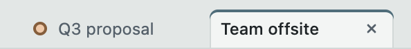
When the agent finishes, a line at the top says so (see Reading what an agent did) and you can edit again: the document is back with you. The status bar says so too: "With you", beside Saved. While an agent is editing, it says who instead, for example "Claude is editing", with a dot in the agent's colour.
Every tab shows whose turn it is. While an agent edits, a small coquí in the agent's colour sits on its tab and hops every few seconds, so from any tab you can see which documents are being worked on. With just one document open there are no tabs, so the coquí by "Claude is editing" at the top hops instead. If you've turned on Reduce motion (System Settings > Accessibility > Display), it sits still. When the document comes back, the coquí gives way to a dot in the colour of the agent it's back from. The dot also shows when an agent opens a document for you, or starts a new one. Point at the tab to see which, and what's left to read, for example "Back from Writer: 3 to read" or "Opened for you by Claude". The dot goes away when you go to that tab, or click or type in it. It also appears if the agent's session ends in the middle of its turn.
If Corillo isn't in front when that happens, you hear a short call, the two notes of a coquí, and Corillo's icon in the Dock counts the documents waiting for you. The count goes down as you look at each one. Documents that come back together share one call, and you never hear it while Corillo is in front. To turn it off, choose Corillo > Sound When It's Your Turn; Corillo remembers your choice. Turning it on plays the call once, so you know what to listen for, as long as Corillo's window is open. The Window menu lists the open documents, each with whose turn it is; choose one to go to it.
Undo goes back over your own edits, from before the agent's turn too. It never undoes the agent's changes, and it stops at an edit of yours whose words the agent changed, so it never brings back your old words in place of the agent's. The same goes for a change saved by another app. Undo starts again after the change in two cases: in the Markdown view, whose text has an Undo of its own (in the Formatted view it goes further back), and when Corillo can't fit the change in where it belongs and reads the whole document again from the file, which is rare. To go back to the text from before, use History.
Reading what an agent did
When the agent finishes, a line at the top of the page says so, and what waits for you in the Comments panel, for example "Claude is done. Back to you. 3 comments to read." The agent's note is counted too, for example "6 comments and a note to read." If the agent also changed words no comment asked for, for something you asked in the chat or on its own, the line ends with Show changes: it turns on Show changes, with every change since you handed the document over. While changes or an earlier version are shown, their own line at the top takes this one's place, and this one comes back when you go back to the document. If two agents finish one after the other, the line names both.
There's nothing to close. The line goes by itself once you start working: when you type in the document, or post, reply to, resolve or reopen a comment. Reading doesn't make it go, so you can click through the comments and scroll first. Nothing on the page moves when it goes. When an agent starts on the document again, its "is editing" line takes the same place. The words you're reading stay where they are when that line comes up, even with no line there before it.
Reading what the agent did is going through the comments in the panel, one at a time. Click a comment, or choose Review > Next Comment (Option-Command-Down Arrow). The comment comes into focus, its words come into sight on the page, and the words the agent changed for it are highlighted in light blue. Its card shows all the words the comment is on, and every message in full; the others show the first two lines of the words and the first four of each message, ending in "…". Then:
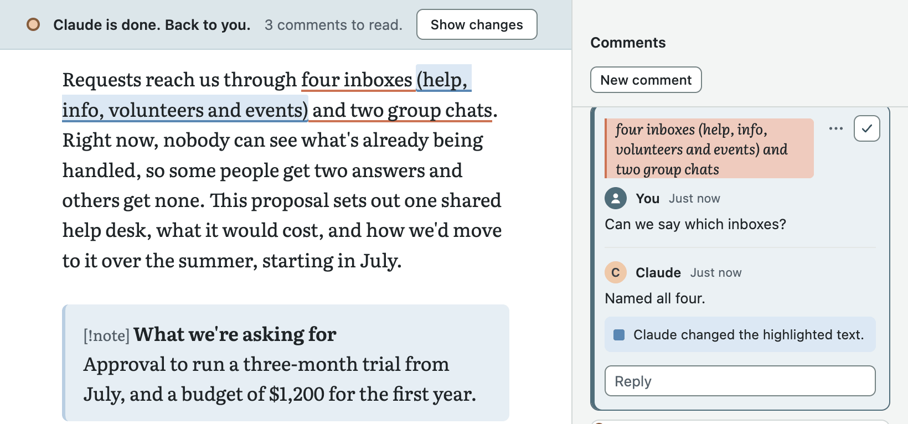
- Resolve, the tick in the comment's top right corner, when you're happy: the comment is done and its card is hidden. Review > Resolve Comment (Option-Command-Return) does the same and goes to the next comment with something new, or else the one after.
- Reply to ask for more: the comment stays open for the agent's next turn.
- Next Comment and Previous Comment (Option-Command-Down Arrow and Option-Command-Up Arrow) go from card to card without deciding. Next goes first to each card with something new, wherever you are, then back to the top ("That's everything new."), then card by card in the panel's order. Both go round from the last card to the first.
After Next or Previous Comment, the keyboard rests on the card, not in the document, so nothing you type or press changes the page: a ring round the card shows it. Start typing to reply: the reply box opens with what you typed. Paste opens it with what you copied. Return opens the reply box too, Command-Return posts the reply, and Option-Command-Return resolves the comment and moves on. In the reply box, Escape takes you back to the card; on the card, Escape takes you back to the document, where you were, with nothing selected. Review > Reply to Comment (Option-Command-R) opens the reply box of the comment in focus from anywhere.
Escape takes you one step out: from a button on a comment (the tick, ⋯, an option) to the comment, and to the page from a button at the top of the panel, from History's list, or from the line saying an agent is done and the bars of Show changes and an earlier version.
A card with something new from an agent, a reply or a change, has a small dot on its left edge in the agent's colour. The dot goes once the card has been in focus, and the status bar counts what's left, for example "With you · 4 to read". Everything counts as read when you open the document again.
To see what the text said before, click Show what it said before on the comment: the old words appear struck through beside the new ones, and the new words turn green, just for that comment's change. Words the agent only added turn green with nothing struck through, since there was nothing there before. If none of the old words are on screen, the page goes to the first of them. They go away when you click again, start typing, or show changes or an earlier version. Only the agent's latest turn is highlighted, so after a second turn you see what changed in that turn.
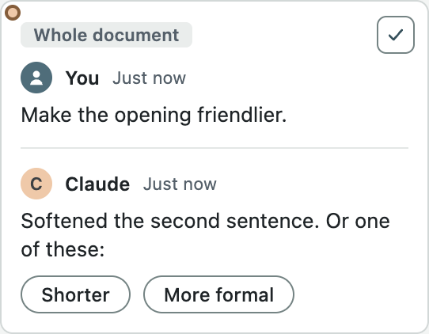
When a choice is yours to make, the agent puts its best version in the text and offers the others as options: buttons under its reply, such as Shorter or More formal. Click one to put that version in the text instead. It's your edit: Command-Z takes it back, and History shows it as yours. Chosen with the keyboard (Return), the keyboard stays on the comment, so Command-Z takes it back from there too. The comment says "You chose: Shorter", highlights what changed ("What you chose is highlighted."), and stays open until you resolve it. To try another option, click it: it takes the place of the one you chose, and Command-Z goes back. If Command-Z takes your choice back out, the comment no longer says you chose it, and its button is there again. If you've changed those words since, the button says the option no longer fits, and nothing changes. While an agent is editing, a click on an option changes nothing and says why: choose once the document is back with you. With Show changes on, a click works too: the changes stay shown, with your choice in the text, not marked as a change.
The panel holds comments only. Changes no comment asked for, such as those for something you asked in the chat, have no card: see them with Show changes, on the line at the top or in the toolbar, and in History, which keeps what you asked with the changes made for it.
The agent may also leave a note when it hands the document back: something you should know or decide that isn't about one comment, such as a change it suggests beyond what you asked, or a choice that's yours to make. It's the first card in the panel, called Note from Claude (or the agent's name). Click Done on the note, the tick in its corner, once you've read it, or choose Review > Mark Note as Done (Option-Command-Return) while it's in focus. The agent leaves no note when its replies say it all. History keeps the note with the version.
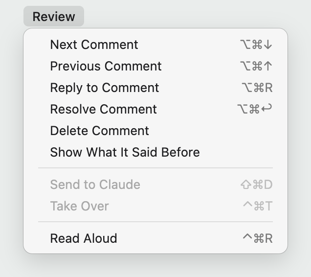
The Review menu works at any time, not only after an agent's turn. Next Comment and Previous Comment go from card to card; the rest act on the comment in focus.
The cards keep to the comments themselves: whose turn it is shows on the tab, in the status bar and on Send to Claude, not on each card. (A screen reader still reads it with each card: "waiting for you" once the agent has answered, "for Claude, not sent yet" or "sent to Claude" after you've written.) The panel keeps one order, the order of the words the comments are on, whoever's turn it is.
If the words a comment was on are deleted, by the agent or by you, a dashed coral box marks where they were (also when an agent cuts them and leaves the full stop or bracket that closed them), and the comment keeps its place in the panel, so you can see what went and where. The box is only on screen: it has no line number and is never in the file. (If you delete a whole paragraph yourself, the paragraph stays as an empty line, saved like any other, with the box inside it.) Selecting the comment shows the deleted words with Show what it said before. Resolving the comment removes the box; Undo brings the words back.
Replies and resolving
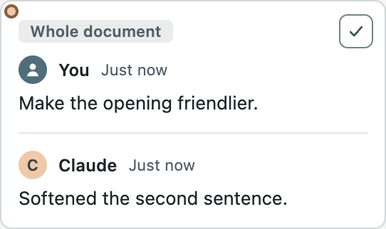
Each comment keeps its conversation: your comment, the agent's reply, and anything after. To answer, click the comment and type in its Reply box. Then hand it back again (Send to Claude, or tell your agent in the chat): it picks up comments with new replies in its next turn.
When you're happy with a change, click Resolve, the tick in the comment's top right corner. The comment is closed and its card is hidden; the cards around it stay where they are. Only you can resolve comments, and agents don't see resolved ones. Resolved one by mistake? Press Command-Z (or click Undo) straight away, before doing anything else, and it's open again, with any reply you'd started still in its box.
The top of the panel counts the resolved comments, for example "3 resolved". Click Show beside the count, or choose View > Show Resolved Comments, to see them: they're paler, with a dashed edge, and their tick is filled in. Click it (Reopen) to open one again, and Hide to put them away. Corillo shows them for that document until you close it.
Agents can start comments too, with a question or a note for you. They never edit or delete anyone's comments. If the words a comment was on are deleted, the comment stays, with a dashed box where they were (see Reading what an agent did). If they changed outside Corillo and it can't tell where they were, the comment shows the note "The text this comment was on has changed."
Next: Several agents
Several agents
More than one agent can work on the same document, like several colleagues. Each shows up under its own name and colour, and each works only on the comments meant for it.
Names
An agent is named after the tool it runs in: Claude (for Claude Code and Claude Desktop), Codex, Cursor, Gemini or Copilot. A custom agent set up for one role, such as a Writer agent, shows that role's name; a very long one is shortened to its first few words. Agents with the same name on one document are numbered: Claude, Claude 2, Claude 3.
A new chat shows as plain Claude, unless the Claude already on the document is busy with it (editing, waiting for your review, or working on comments you gave it). The earlier chat is numbered instead, and each name keeps its colour.
Comments with no name
A comment you don't direct at anyone goes to the agent you tell next: the first agent to pick up comments after you wrote it, when you send the document back or ask in the chat. It doesn't matter which agent looked at the document first, so a chat left open from yesterday doesn't take today's comments. Once an agent has a comment, it stays with that agent until you write on it again.
Until an agent has it, the card names the agent it would go to: the one editing, or else the one waiting for your review, or else the one that arrived last. The @ list marks that agent Default.
An agent set up for one role, such as Writer, takes only comments that name it while another agent is on the document. If Writer finishes and found nothing for it, the line at the top says so, and whom your comments are for: "Writer found nothing addressed to it. 2 comments are waiting for Claude."
Direct a comment at one agent
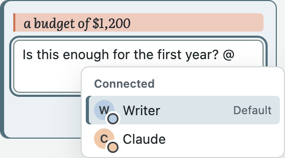
Type @ in a comment, the way you'd mention a colleague in a shared document. A list of agents opens under it. Type a few letters to narrow it, then click a name, or use the Up and Down arrows and press Return or Tab. Press Escape to close the list and keep the @ as you typed it.
The list has every agent Corillo has seen lately, on any document, in two groups:
- Connected: agents working with Corillo right now, each with a small dot on its initial. The ones on this document come first, with the default agent marked. An agent connects the first time it does something in Corillo, and stays connected until its session ends.
- Not connected: agents Corillo has seen before, most recent first, shown a little fainter. You can still pick one.
The list changes as agents connect and leave, even while it's open. Corillo remembers the 12 agents it has seen most recently, between launches too, and forgets one it hasn't seen for 30 days.
The name goes into your comment as @Writer, in Writer's colour, and the comment goes to Writer only. Typing the name yourself works too: @writer is Writer. To change your mind, delete the name (one Backspace takes it all) and the comment has no name again. Once posted, the comment shows "To Writer". Comments with no name show none. An @ inside a word, such as an email address, is left alone.
A comment goes to one agent, so that no two agents work on the same thing. If you name two, it goes to the first, and the comment says so before you post it; start another comment for the second.
Naming an agent in a reply hands the comment over to it, for example to have Writer polish what Claude changed. Its card then says it's waiting for Writer.
If the agent you named isn't on the document, or isn't connected, or leaves while you're writing, your comment still goes to it. It waits for an agent of that name, as it would for a colleague who's away, and goes to Writer once Writer looks at this document. A screen reader reads "waiting for Writer" with its card meanwhile.
Agents don't talk to each other in comments. Every comment an agent starts is for you.
Taking turns
Only one agent edits a document at a time. If another asks while one is editing, Corillo has it wait up to 45 seconds for its turn. If the document still isn't free by then, it's told who has it and tries again later. Everyone can still read and comment meanwhile. The status bar always says whose turn it is: "With you", or the agent that's editing.
If two agents finish one after the other while you're only reading, the line at the top names both, for example "Claude and Writer are done. Back to you. 2 comments to read." Once you've started working, the next line tells only of the next agent.
Seeing what changed
Corillo keeps a version each time someone works on a document, so you can see what changed and go back to an earlier version.
Show changes
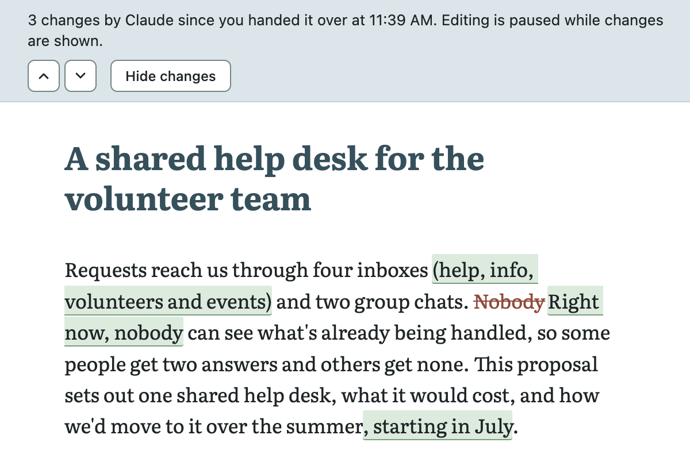
Click Show changes in the toolbar, or choose View > Show Changes (Control-Command-C), to see everything that changed since you handed the document over: every agent's turn since then, and any change made in another app. New words are highlighted and removed words are struck through. Your own edits since aren't marked. Where an agent's change and one of yours meet, Corillo leaves it unmarked rather than risk marking your words as the agent's.
You hand the document over when an agent takes it from you: when you click Send, or ask the agent in its chat. If you only read between two agents' turns (Writer, then Claude), both turns are shown together. Once you edit the document, or write, edit or resolve a comment, the next agent to take it starts afresh.
The banner says how many changes, by whom and since when, for example "4 changes by Writer and Claude since you handed it over at 10:42 AM". Click its arrows, or press Option-Command-Down Arrow and Option-Command-Up Arrow, to go from change to change: each comes into sight with a ring around it. The Comments panel stays beside the page; click a comment to go to its change. A comment's own note on its change, and Show what it said before, wait until you hide the changes. Choosing one of an agent's options there puts it in the text, and the changes shown follow.
An empty line added or taken away isn't marked, here or in History: it's spacing, not a change to the words. While changes are shown, the page can't be edited, but you can still comment: select words on it and click Comment (or press Option-Command-M), as you would on the document. The comment goes on the same words in the document, and the changes stay shown. Words shown struck through are gone from the document, so they can't take a comment. With nothing selected, the comment is on the whole document. Click Hide changes, or press Escape, to go back to writing. To see what one version changed, pick it in History. If Corillo ever can't work out the changes, a notice on the tab says so and the page stays as it was.
History
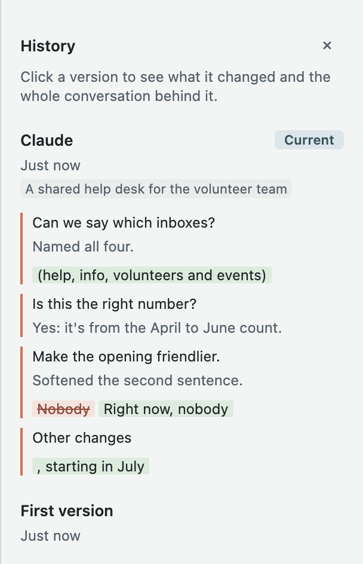
Click History, or choose View > Show History (Control-Command-H), to see every version, newest first: who made it (You, an agent's name, or "Changed outside Corillo") and when. An agent's version also shows the start of each comment it answered and of its reply, and the words it changed for each, so you can see your feedback next to what changed. What you asked for in the agent's chat shows as "Asked in chat", changes no comment asked for as "Other changes", and the agent's note as "Note". When an agent changed many places, History says how many and shows the biggest few; small touches such as a comma are counted but not shown.
Each version also names the sections it changed, by their headings (level 1 to 3, the same sections the outline lists), as small labels in the order the sections come in the document; past six, it names the first six and says how many more. A change above the first heading is in "Start of the document"; a document with no headings names none. Your own versions also say what you changed, the same way. If several of your versions come one after another (an agent took the document and gave it back without changing anything, say), they're one row: "You · 3 versions". Click it to see everything they changed together; it opens to each of them, newest first, and you can click one to see it on its own and restore it. Restore on the row itself brings back the newest of them.
Opened with Control-Command-H or the View menu, History puts the keyboard on the newest version: Up Arrow and Down Arrow go through the versions, and Return shows one. F6 from the page comes to the list too, and Escape there goes back to the page. Closing History puts the keyboard back in the page. Click a version to see it, marked with what it changed from the one before. Its entry in History opens to the whole conversation behind it: each comment with the words it was on, every message and reply in full, anything you asked in the chat, and the agent's note. Comments you've resolved since are there too, as they were: History is the record. Click Back to current when you're done.
What makes a version
- Each agent turn is one version, however many comments it answered.
- Your own edits between agent turns are one version.
- A change made to the file in another app is a version called "Changed outside Corillo".
The first version is the document as Corillo first saw it.
Restore a version
Click a version in History, then click Restore this version (or choose File > Restore This Version). Its text becomes the document again. The restore is saved as a new version, so you can always change your mind. You can't restore while an agent is editing.
Ask your agent about versions
Your agent can look through the versions too, with every comment, reply and request in full. Ask it what changed since its last turn, what you asked for back then, or to bring back a paragraph or a whole earlier version. It brings the old words back during its turn, so that becomes a new version.
History is kept by Corillo, not in the document. See Where Corillo keeps comments and history.
Writing and editing
Everyday writing works the way you'd expect. Here are the parts that are good to know.
Typing shortcuts
At the start of a line, type "- " (a hyphen and a space) to start a bulleted list, "1. " for a numbered list, "# " for a heading, or "> " for a quote. At the start of a bulleted item, type "[ ] " to make it a task with a box. These are Markdown's own marks: Markdown at a glance shows all of them, with the toolbar button or key for each.
Empty lines
Every empty line on the page is a line of the document: it's saved in the file, has its number when line numbers are on, and is an empty line in the Word document too, so the space you see is the space you send. Press Return on an empty line for another, and Backspace to take one away. Words typed on an empty line make it a paragraph, and Markdown needs an empty line under a paragraph, so one appears below it. A quote, a callout or a list item can't hold an empty line: Return on an empty line there moves it out (see Quotes).
Tables
Choose Insert > Table. In a table, Tab moves to the next cell and selects its text, and adds a row after the last cell. Return moves to the cell below. Shift-Return starts a new line in the same cell. The arrow keys move from cell to cell. Use the Table menu (in the menu bar or the toolbar) to add or delete rows and columns, align a column, or delete the table. Control-click a cell for the same row and column items, for that cell. The first row is always the header row. A table wider than the page scrolls sideways.
Pasting several paragraphs into a cell puts each on a line of its own in that cell. Pasting a table into a cell fills the cells from there on.
Now and then a table holds something Corillo can't show in a cell, such as coloured text or a list. Corillo then shows the table as Markdown text, labelled "Table, shown as Markdown", so nothing in it is lost. You can still edit it and comment on it. The cell the cursor is in is highlighted, and its row more lightly, so you can find your place in a big table. The Markdown view does the same, and switching views keeps the cursor in the same cell. Comments on a table stay on their words either way.
Pictures
Choose Insert > Picture…, paste a picture, or drag one onto the page. Corillo keeps a copy in a folder next to the document, named after it: for "Q3 proposal.md", the folder "Q3 proposal images". Keep that folder with the document. File > Rename or Move… moves both together.
Each picture takes as much of the page's width as it will in the Word document, so what you see is what you'll send.
When a picture's file changes (an agent redraws a chart under the same name, say), or a picture the document names arrives later, the page shows it once the agent's change arrives, its turn ends, or you come back to Corillo.
A picture from the web that an agent adds through Corillo (in a change, a document it makes, an option in its reply, or a diagram) shows as a box with its address until you click Show picture (or select the box and press Return), so nothing goes to that site without you; after that it shows in that document every time. Copied into another document while it waits, from the page or the Markdown view, it waits there too. Until then, an export leaves it out and says so. When Corillo asks a site for a picture, it sends only the picture's address: no cookies, and nothing about you or Corillo.
Footnotes
Choose Insert > Footnote to add one where the cursor is. Footnotes are numbered in the order they appear. Click a footnote's number to go to its note. Deleting the number takes its note away too.
Diagrams
Ask your agent for a diagram, such as a flowchart or timeline. Agents write diagrams as text, and Corillo draws them. To change one, ask your agent in a comment or in the chat. To see the diagram's text, click Edit diagram code. If an agent's diagram holds a picture from the web, it's drawn without it, with a box for it above the diagram, until you click Show picture (or press an arrow key from the line next to the diagram, then Return).
Find and replace
Press Command-F (or choose Edit > Find > Find…) to open the find bar above the page. Every match is highlighted, and the bar says how many there are. Press Return for the next match and Shift-Return for the previous one. For Replace, press Option-Command-F or click the Replace… button. Replace changes the current match; Replace all changes them all, and one Undo puts them all back. Press Escape to close the bar.
Find looks in the comments too: every message on the cards, resolved comments included, and agents' notes. The bar counts those after the matches in the text, such as "3 of 12 · 2 in comments". Once you're past the last match in the text, Return goes on into the cards, in the order the panel lists them, then back round to the text. A card Find goes to comes into sight, with the words it's on, as if you'd clicked it: on the page with its changes too, while Show changes is on. If the History list is in the way, it closes to make room. While an earlier version is shown on its own, the comments aren't beside it, so Find doesn't look in them. A resolved comment's card shows while Find is on it. If you close the bar on a match in a card, the keyboard stays on that card: Escape goes back to the document. Replace and Replace all change the document's text only, never a comment.
While an earlier version or Show changes is on screen, Find searches what you see there. Replace and Replace all are greyed out, since a version shown can't be changed: go back to the current version to replace.
Read aloud
To proofread by ear, choose Review > Read Aloud (Control-Command-R), or, in a narrower window, Read aloud at the end of the toolbar's More menu. Corillo reads the document in your Mac's own voice, a sentence at a time, from the sentence the cursor is in to the end, or only the words you selected. It reads the words as the page shows them: no Markdown marks, no comments, a link as its words and a picture by its description. The sentence being read is shaded softly on the page, and the word being said a little deeper and underlined, and the page moves along to keep it in sight.
A bar above the page says "Reading aloud", with buttons for the previous sentence, pause or resume, the next sentence, and stop. Press Escape to stop, or choose Read Aloud again. It also stops when you type, when an agent changes the document, when you switch to the Markdown view or another tab, and when you close the window. Nothing is ever read aloud unless you choose it. It reads in the Formatted view, with your Mac's default voice: to change the voice, go to System Settings > Accessibility > Spoken Content and choose a System voice.
The right-click menu
Control-click (or right-click) in the document for spelling suggestions, Cut, Copy, Paste, Paste and Match Style, and Select All. On a link it adds Open Link, Edit Link…, Copy Link and Remove Link. Open Link, like Command-clicking a link, opens a web address in your browser and a link to another document in a tab, and takes you to a heading in this document (a link such as #risks). A link to another kind of file shows it in Finder; Corillo never opens it. If the file or heading can't be found, Corillo says so. With words selected, New Comment starts a comment on them, in the Markdown view's text and preview too. In a table, it adds the Table menu's row and column items, for the cell you clicked.
Pasting and copying
Pasting from Word, Google Docs, Pages, Outlook or a web page keeps headings, bold, italic, links, lists, tables, quotes and pictures, and leaves out fonts, colours, sizes and empty paragraphs. Links to web pages, email addresses, phone numbers and files nearby are kept; any other kind of link is pasted as its words. Text from an agent's chat pastes formatted too. Pictures are copied into the document's pictures folder, including a picture copied from another document in Corillo. To paste plain text, choose Edit > Paste and Match Style (Shift-Command-V).
Copying from Corillo works both ways: paste into Word, Outlook or Gmail and it keeps its formatting; paste into an agent's chat and it arrives as Markdown text. Words copied from an earlier version in History, or from the Markdown view's preview, paste back into the document exactly as they were, diagrams and footnotes included.
Pasted into an email, copied text looks as it does on the page: each empty line you see is an empty line in the email, a line you broke yourself (such as "Best," over your name) stays broken, and a table keeps its look. To copy a whole email at once, choose Edit > Copy for Email, or Copy for email in the toolbar's Export menu. It copies the whole document, whatever is selected, without the document details at the top. If the first line starts with "Subject:", it stays out of the body: the notice at the bottom of the window shows the subject, with a Copy subject button for the email's subject line. It leaves out what Word leaves out, comments and link definitions, and a link to another note shows as its words. Tasks keep their boxes, in any copy.
Pictures don't travel in a pasted email: attach them, or insert them in the email itself.
Line numbers
Choose View > Line Numbers to show, beside the text, the line of the Markdown file where each part starts. They're the numbers your agent sees when it reads the file, so "look at line 42" means the same place to you both. Almost every line of the file has its number, in the formatted view as in the Markdown view: in the left margin beside each paragraph, heading, list item, table row and line of code, each line of a paragraph you wrote line by line, like a poem, and each empty line, in the middle of its line of space. In the formatted view, a few lines have none: a heading's underline (=== or ---) and any lines of the heading above it after the first, the second and later blank lines in a row inside a list or quote, and the code of a diagram, which shows as its picture. The numbers follow your changes as you type. They're never part of the text, so they aren't copied, saved or exported. Corillo remembers your choice, for every document.
The outline
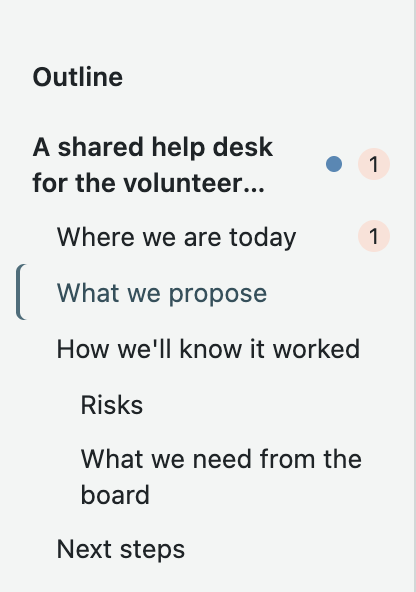
Click the Outline button at the left end of the toolbar, or choose View > Show Outline, to list the document's headings at the left of the page, to three levels (a fourth-level heading belongs to the section above it). Click a heading to go there: it comes to the top of the page, with the cursor at its start. The section you're reading is marked, and the status bar names it, so you know where you are in a long document. With the keyboard, press Shift-F6 in the page to move to the outline (past the find bar or a line at the top, if one shows), then Up and Down go from heading to heading and Return goes there. View > Show Outline is Control-Command-O. The outline shows in the formatted view. While Show changes or a version from History is on, it's dimmed until you go back to editing. In a narrow window it makes way for the page, and the status bar still names the section. If you turn it on where it can't show, a note at the top of the page says why: hide the comments or make the window wider to make room, or, in the Markdown view, go back to Formatted. Click the button again to hide it. Corillo remembers your choice, for every document.
Beside each heading are the number of open comments in its section, and a dot when an agent or another app changed the section since you last handed the document over: the same changes Show changes marks.
Using Corillo with Obsidian
Corillo and Obsidian can work on the same notes. Corillo keeps Obsidian's own marks exactly as written, so a note looks right in both apps, whichever one you edit it in.
- Links to other notes, such as
[[Q2 review]]or[[Q2 review|the review]], look like links. Command-click one to open the note in Corillo. If Corillo can't find the note, it says so. Followed straight away by an address in brackets, as in[[1]](https://example.com/report), it's an ordinary link whose words are[1], the way AI tools write their sources. - Pictures added the Obsidian way, such as
![[chart.png]], show on the page. Corillo looks next to the note, in its pictures folder, in an "attachments" folder, and then anywhere in the vault. - Highlights (
==like this==) are highlighted, tags (#planning) are plain words, and callouts (a quote that starts with[!note],[!tip],[!warning]and so on) are coloured boxes with a title. - Comments (
%%like this%%) are in grey. They're left out of the preview and of Word and PDF exports.
While you edit, the marks around these ([[ ]], ==, [!note]) stay on the page in grey, so you can change them. The preview in the Markdown view hides them, as Obsidian's reading view does. Word and PDF exports show a link as its words, a callout as the same coloured box with its title in bold, and a highlight as a highlight (yellow, in Word). Task lists show their boxes, on the page and in Word (see Lists). Math ($x^2$) shows as written.
Pictures you add in Corillo, and single line breaks, are written in a form Obsidian shows the same way. For the marks both apps share, see Markdown at a glance.
Zoom
Choose View > Zoom In, Zoom Out or Actual Size to make the page bigger or smaller, from 50% to 300%. The toolbar stays the same size. To go back to 100%, click the zoom level in the status bar. Corillo remembers your zoom.
Corillo is light or dark as the Mac is. To choose for yourself, whatever the Mac is set to, choose View > Appearance > Light or Dark; Match the Mac goes back to following it. Corillo remembers your choice. Exported Word documents and PDFs are always light.
Choose View > Page Width > Wide to let the text use more of the width beside the comments, up to about 100 characters a line so it stays easy to read on a big screen, or Standard for a column like a printed page. Corillo remembers your choice.
Corillo opens its window where you left it, at the same size. If that screen isn't connected any more, the window opens on the one you have.
Markdown at a glance
Markdown is plain text with a few marks for formatting. You never have to type the marks: the toolbar adds them for you. This page is for when you see them, in the Markdown view or in what an agent writes.
Each example shows the Markdown, how the Formatted view shows it, and how to do the same in Corillo without typing the marks. Anything not on this page is kept as written.
Headings
# Q3 plan ## Budget ### Travel
Q3 plan
Budget
Travel
One to six # marks, then a space. One # is the biggest heading, usually the title; each extra # is a level smaller.
In Corillo: choose Heading 1 to Heading 4 from the paragraph style menu at the left of the toolbar, press Option-Command-1 to Option-Command-4, or type "# " at the start of a line. Normal text or Option-Command-0 makes it a paragraph again.
Paragraphs and line breaks
Sales grew in every region. Next year should be the same, if hiring goes to plan.
Sales grew in every region.
Next year should be the same, if hiring goes to plan.
An empty line starts a new paragraph. Each empty line shows as a line of space, on the page and in Word: one between paragraphs is the usual space, and each one more adds a line. A single line break inside a paragraph shows as a new line, as it does in Obsidian, and Corillo keeps it when you edit the paragraph. Some other apps, GitHub among them, join the two lines into one sentence.
Ana Ruiz\ Head of Sales
Ana Ruiz
Head of Sales
To start a new line that every Markdown app shows, end the line with a backslash (\). Two spaces at the end of a line do the same, but you can't see them.
In Corillo: press Return for a new paragraph, again for each empty line you want, and Shift-Return for a new line in the same paragraph. Backspace at the start of a paragraph takes away the empty line above it, so the two sit on lines next to each other, as one paragraph; press it again to join the lines.
Bold, italic and strikethrough
**Bold**, *italic* and ~~struck out~~.
Bold, italic and struck out.
Two asterisks for bold, one for italic, two tildes for strikethrough. Underscores work for bold and italic too: __bold__ and _italic_. Markdown has no underline.
The marks only work where they touch a space or the edge of a word in the right way: in Acme**(firm)** they show as asterisks. When you make text like that bold in Corillo, it's saved as Acme<strong>(firm)</strong>, which stays bold here, in Obsidian and in Word.
In Corillo: Bold (Command-B), Italic (Command-I) and Strikethrough (Shift-Command-X) in the toolbar.
Code in a sentence
Save it as `budget-2026.xlsx`.
Save it as budget-2026.xlsx.
Backticks (`) around words show them exactly as typed, in a typewriter font, with no formatting inside. Agents use them for file names, formulas and commands.
In Corillo: select the words and choose Format > Code (Command-E).
Links
Read [the brief](https://example.com/brief) or visit <https://example.com>.
Read the brief or visit https://example.com.
The words to click go in square brackets, then the address in round brackets. An address in angle brackets is a link to itself. A web address with no brackets around it stays plain text.
In Corillo: select the words and click Link (Command-K). To follow a link, Command-click it, or Control-click it and choose Open Link. A link can also go to another document beside this one, as in [the budget](budget.md), or to a heading in this one, as in [Risks](#risks): the heading's words in lower case, with hyphens for spaces. In the link box, type the document's name (budget.md) or #risks. A web address gets https:// in front when it ends like one (example.com); for a website with a rarer ending, type its https://.
Pictures

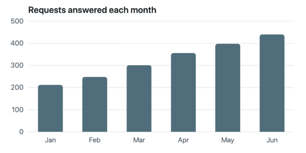
Like a link, with ! in front. The words in square brackets describe the picture for anyone who can't see it. The address says where the picture's file is, starting from the document's folder. A space in it is written %20, the way Obsidian's help gives it; an address in angle brackets, such as <Q3 proposal images/requests.png>, works too. Corillo keeps a document's pictures in a folder beside it, named after it: for "Q3 proposal.md", the folder "Q3 proposal images".
In Corillo: choose Insert > Picture…, or paste or drag a picture onto the page. Corillo copies it into that folder and writes the Markdown for you.
Lists
- Hire two people - Open the Ponce office - Find a space - Sign the lease
Hire two people
Open the Ponce office
Find a space
Sign the lease
1. Draft 2. Review 3. Send
Draft
Review
Send
- [ ] Book flights - [x] Send the invite
Book flights
Send the invite
A hyphen and a space start a bulleted item (* or + work too). A number, a full stop and a space start a numbered item, and the list counts on from its first number. To put a list inside an item, indent its lines to where the item's words start: two spaces under "- ", three under "1. ". In a bulleted list, [ ] or [x] after the hyphen makes a task with a box, empty or ticked; click the box to tick it. A box goes with a plain line only: make a task's line a heading, a quote or code, and the box comes off.
In Corillo: Bulleted list (Shift-Command-8) or Numbered list (Shift-Command-7) in the toolbar, or type "- " or "1. " at the start of a line. For a task, type "[ ] " (or "[x] " for a ticked one) at the start of a bulleted item. In a list, Tab moves an item in a level and Shift-Tab moves it back out.
Quotes
> We'd rather grow slowly than hire badly.
We'd rather grow slowly than hire badly.
A > and a space at the start of the line. A quote, a callout or a list item can't hold an empty line: Markdown has none there, so it wouldn't be saved.
In Corillo: Quote in the toolbar, or type "> " at the start of a line. Return on an empty line in a quote takes it out of the quote, and the empty line is saved after it; in the middle of a quote, the quote is split in two around it.
Code blocks
``` Subject: Q3 plan To: leadership team ```
Subject: Q3 plan
To: leadership teamThree backticks on the line before and the line after. Everything between shows exactly as typed, line by line, in a typewriter font. A word right after the first three backticks says what kind of code it is (python, say). A paragraph indented by four spaces is a code block too, so don't indent paragraphs with spaces.
In Corillo: Code block in the toolbar, or type three backticks at the start of a line.
Diagrams
```mermaid flowchart LR Draft --> Review --> Send ```
A code block that starts with ```mermaid holds a diagram, written in Mermaid, a language for flowcharts, timelines and other diagrams. Corillo draws it. You don't need to learn the language: ask your agent for the diagram you want, and ask again to change it.
In Corillo: rest the pointer on a diagram and click Edit diagram code to see its text. If the code has a mistake, Corillo says so and shows the text instead. Diagrams take the colours of Corillo's light or dark appearance, and change with it.
Tables
| Item | Cost | | ------- | -----: | | Laptops | $4,800 | | Desks | $900 |
| Item | Cost |
|---|---|
| Laptops | $4,800 |
| Desks | $900 |
Each row is one line, with | between the cells. The line of hyphens makes the row above it the header row. A colon in that line aligns the column: on the right (---:) to the right, on both sides (:---:) to the centre, on the left (:---) to the left. The | marks don't need to line up; Corillo lines them up when it saves a table you've edited, unless that would make its rows more than about 100 characters wide, as one long cell would. To put a | inside a cell, type \|.
In Corillo: Insert > Table, then the Table menu in the toolbar to add or delete rows and columns, or to align a column.
Footnotes
Sales grew 12%.[^june] [^june]: From the June sales report.
Sales grew 12%.
A label between [^ and ] marks the place in the text. The note is a paragraph that starts with the same label and a colon, usually at the end of the document. Corillo numbers footnotes in the order they appear, whatever their labels.
In Corillo: Insert > Footnote adds one at the cursor and takes you to its note. Click a footnote's number to go to its note.
Horizontal lines
The plan ends here. --- Notes for next year.
The plan ends here.
Notes for next year.
Three hyphens on a line of their own (*** and ___ work too). Leave an empty line above them: right under a line of text, --- makes that text a heading instead.
In Corillo: Insert > Horizontal line.
Document details
--- title: Q3 plan owner: Ana Ruiz ---
---
title: Q3 plan
owner: Ana Ruiz
---Some tools put details about a document at the very top, between two lines of three hyphens. This is called front matter. Corillo shows it in a box marked Document details, keeps it exactly as written, and leaves it out of Word and PDF exports. You can edit it in the box as plain text.
Every line between the two must look like front matter: a name: value line, a list item, a comment or an indented line, with at least one name:. Anything else, a heading or a line of ordinary words, means the lines are ordinary text between two horizontal lines.
In Corillo: there's no button for it. Type it at the very top in the Markdown view, or ask your agent.
Showing a mark as itself
2026\. A good year. Prices in \*estimated\* dollars.
2026. A good year.
Prices in *estimated* dollars.
A backslash (\) before a mark shows the mark itself instead of formatting. Without them, the first line would start a numbered list at 2026, and "estimated" would be in italics.
In Corillo: just type. When you type a mark in the Formatted view, Corillo adds the backslash for you. That's why you see them in the Markdown view.
Kept as written
Some Markdown has no formatted look in Corillo. Corillo shows it as plain Markdown, in a box with a dashed border, and never changes it: it's saved exactly as written, for the agents and apps that use it. You can still edit it in the box as text.
- Task items in a numbered list: Word shows no box there, so the list is kept as written.
- HTML, such as
<div>,<kbd>or a hidden note like<!-- this -->. A paragraph with HTML in it is kept whole, except for a line break (<br>) and bold, italic or struck words (<b>,<i>,<s>), which show formatted. Word shows a block of HTML as its words; a hidden note stays hidden. - Link definitions: lines like
[brief]: https://example.com/brief, which let the text say[the brief][brief]. The links in the text still work. Word and PDF leave the definitions out, so they're shown faint. Editing a paragraph with a link like that keeps it written that way. Corillo writes the address out in full only if you change it in the link box, delete its definition, or copy the link. - Longer footnotes: a note of more than one paragraph, two notes with the same label, and notes written inside the text like
^[this]. - A link definition or footnote inside a quote or list: the whole quote or list is kept.
- A table with something its cells can't hold, such as HTML.
- Document details, at the top of the document.
Press <kbd>Return</kbd> to start.
Press <kbd>Return</kbd> to start.Read [the brief][brief]. [brief]: https://example.com/brief
Read the brief.
[brief]: https://example.com/brief<!-- Ana: check these numbers -->
<!-- Ana: check these numbers --><div align="center">Draft</div>
<div align="center">Draft</div>If you'd rather have one of these formatted, ask your agent to write it with the marks above instead: **bold** in place of <b>, say.
Keyboard shortcuts
The shortcuts people use most. Menus and buttons show these keys as symbols: ⌘ is Command, ⌥ is Option, ⇧ is Shift and ⌃ is Control.
On a keyboard laid out for another language, a shortcut goes by the letter on the key: Command-Z is Undo on a French keyboard too, wherever Z is, and Option-Command-M is the key with M on it.
| To do this | Press |
|---|---|
| Start a new document | Command-N |
| Open a document | Command-O |
| Copy the document's path | Option-Command-C |
| Close the tab | Command-W |
| Close the window | Shift-Command-W |
| Move the keyboard to the next area of the window | F6 |
| Move the keyboard to the area before | Shift-F6 |
| Show the next tab | Control-Tab |
| Show the previous tab | Control-Shift-Tab |
| Move the tab one place left | Control-Shift-Command-Left Arrow |
| Move the tab one place right | Control-Shift-Command-Right Arrow |
| Undo | Command-Z |
| Redo | Shift-Command-Z |
| Bold | Command-B |
| Italic | Command-I |
| Strikethrough | Shift-Command-X |
| Code | Command-E |
| Add or change a link | Command-K |
| Normal text | Option-Command-0 |
| Heading 1 | Option-Command-1 |
| Heading 2 | Option-Command-2 |
| Heading 3 | Option-Command-3 |
| Heading 4 | Option-Command-4 |
| Bulleted list | Shift-Command-8 |
| Numbered list | Shift-Command-7 |
| Indent a list item, or lines of code | Tab |
| Outdent a list item, or lines of code | Shift-Tab |
| Switch between the Formatted and Markdown views | Command-/ |
| New comment | Option-Command-M |
| Post a comment | Command-Return |
| Show or hide comments | Control-Command-M |
| Next comment | Option-Command-Down Arrow |
| Previous comment | Option-Command-Up Arrow |
| Reply to the comment in focus | Option-Command-R |
| Resolve the comment in focus and go to the next | Option-Command-Return |
| Send your comments to the agent waiting for your review | Shift-Command-D |
| Take over from the agent editing | Control-Command-T |
| Show or hide the changes since you handed it over | Control-Command-C |
| Show or hide History | Control-Command-H |
| Show or hide the outline | Control-Command-O |
| Read aloud, or stop reading | Control-Command-R |
| Find | Command-F |
| Find and replace | Option-Command-F |
| Next match | Command-G |
| Previous match | Shift-Command-G |
| Paste and Match Style | Shift-Command-V |
| Zoom in | Command-Plus (+) |
| Zoom out | Command-Minus (-) |
| Actual size | Command-0 |
Cut, Copy, Paste and Select All work as in every Mac app. Every shortcut is also shown beside its item in the menu bar.
Moving around the window
In the page, Tab indents a list item or lines of code and otherwise does nothing, so it never takes you away from your writing. To move the keyboard to another area of the window, press F6. It goes from the page to the side panel (the comment in focus, or else the panel's first button), the status bar, the tabs, the toolbar, and round to the page, back where your cursor was. The outline, and a line at the top of the page such as the find bar or an agent's notice, are areas too while they show. While an agent is editing the document, the page can't take the keyboard, so F6 passes over it. Shift-F6 goes the other way. Within an area, Tab and Shift-Tab move from one button to the next. View > Go to Next Area and Go to Previous Area do the same.
On a Mac laptop's keyboard, and many of Apple's other keyboards, the top row does the Mac's own things, such as the brightness, the sound or Do Not Disturb: pressed alone, F6 may turn on Do Not Disturb instead. So hold fn and press F6, or turn on "Use F1, F2, etc. keys as standard function keys" in System Settings > Keyboard > Keyboard Shortcuts > Function Keys.
Connecting an agent by hand
If connecting with one click didn't work, you can add Corillo to an agent tool's settings yourself. It takes a few minutes. The settings below already hold this copy of Corillo's location.
- Find your tool below and click Copy location.
- In Finder, choose Go > Go to Folder, paste, and press Return. The file's name starts with a dot or sits in a hidden folder, so if you can't see it, press Shift-Command-Period to show hidden files. Control-click the file and choose Open With > TextEdit.
- Click Copy beside the settings.
- If the file is new or empty, paste the settings as they are.
- If the file already has settings in it, the copied part has to fit inside them. This is easy to get wrong by hand. An agent that can change files on your Mac, such as Claude Code or Codex, can do it for you: paste the settings into its chat and ask it to add them to that file.
- If there's no file yet, make one in TextEdit: choose Format > Make Plain Text, paste the settings, then save with that name, in that folder. If TextEdit asks which ending to use, keep the one in the name (.json or .toml).
- Save the file, then restart the tool.
Another agent tool
Most agent tools can add an MCP server: the standard way agents connect to apps like Corillo. Look for that in the tool's settings, and give it these details:
If you move Corillo (from Downloads to Applications, say), these details change. The next time Corillo opens, it updates the tools it had connected and says so in a notice at the bottom of its window. Help > Connect Agents… shows "Needs updating", with an Update button, for any tool still pointing at another copy of Corillo.
Troubleshooting
What to do when something doesn't work as you expect.
My agent can't see Corillo
- Restart the agent tool after connecting it: quit it completely (Command-Q) and reopen it, or start a new session. A tool only looks for Corillo when it starts.
- Choose Help > Connect Agents… and look at your tool. Ready means Corillo is in the tool's settings; Connected means one of its sessions is using Corillo now. An agent first reaches Corillo when it uses it, so ask it something in Corillo, such as the request that screen offers to try, and the tool should turn Connected. If it says "Needs updating", Corillo has moved since you connected it: click Update, then restart the tool.
- Open Corillo from your Applications folder, not from its disk image or Downloads. Connected from there, agents wouldn't find it later, so Help > Connect Agents… asks you to move it first.
- If Help > Connect Agents… says "Agents can't reach Corillo", Corillo couldn't set up the agents' connection when it opened. Quit Corillo and open it again.
- Corillo doesn't need to be open. When an agent wants it, Corillo starts by itself in the background.
- Claude in a web browser can't reach apps on your Mac, Corillo included. Use the Claude app for Mac, or Claude Code.
- Some agent tools ask your permission the first time an agent uses Corillo. Allow it.
- If your tool isn't listed, or connecting didn't work, see Connecting an agent by hand.
My agent didn't answer my comments
- Hand it back: click Send to Claude at the top of the Comments panel, or, where it says Copy for Claude, paste what it copies in the agent's chat. Agents don't look at comments until you do.
- The button says Copy for Claude, not Send: no agent is waiting for your review of this document. Only Claude Code waits; Claude Desktop can't, so you paste a line in its chat. An agent stops waiting when you press Esc in its chat or close it: paste what Copy for Claude copies in its chat, or ask it to open the document for your review again.
- A comment it has already answered goes back to it only once you reply on it.
- A comment that says "To" and another agent's name, or names one with @, waits for that agent. See Direct a comment at one agent.
- If History shows "Changed outside Corillo" after its turn, the agent changed the file with its own tools instead of through Corillo, so nothing ties its changes to your comments. Ask it to make its changes through Corillo.
I can't type in my document
- If a notice says an agent is editing, wait for it to finish, or click Take over. See Take over.
- If a banner says Corillo is showing changes or an earlier version, click Hide changes or Back to current.
- In the Markdown view, the text on the right is a preview. Type in the text on the left.
"Changed outside Corillo"
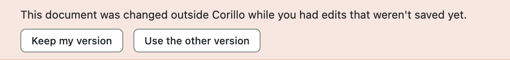
Another app, or an agent writing the file directly, changed the document at the same moment as you were typing. Corillo never overwrites either change without asking.
- Keep my version saves your text. The other version is still kept in History.
- Use the other version shows the other app's text instead. The typing Corillo hadn't saved yet is dropped.
If you had nothing unsaved, Corillo simply shows the new text, and History lists it as "Changed outside Corillo".
The status bar says "Not saved"
Corillo couldn't save, and says why: the disk is full, say, or the file is locked or read-only. Your text is safe in the window, and Corillo keeps trying every few seconds. Fix the cause (free some space, or in Finder choose File > Get Info and turn off Locked) and the next try saves it. Until it's saved, an agent can't take the document or export it, so nothing of yours is missed.
Before each save, Corillo also reads back what it's about to write, so the file never loses a word you can see on the page. If the file would lose words, Corillo writes that part another way that keeps them; if it can't, it doesn't save, the status bar says "Not saved: the file would have lost words", and a notice at the bottom of the window names the words. Your text is safe in the window and comes back if Corillo closes. Keep typing: each change tries again. Until then the Markdown view doesn't open, so the words can't be lost from there, and closing the document asks first: Cancel keeps it open with your words. To keep a copy as well, select everything on the page, copy it and paste it into another document. If the file changes in the moment after a save (a cloud folder or another app writing it), Corillo shows the new version, as it does for any change made outside it, and never writes over it.
"Deleted outside Corillo" or "moved to the Trash"
A document renamed or moved while it's open is simply followed, so you'll only see these when the file is gone.
- Moved to the Trash. If everything was saved, Corillo closes the document and says so in a notice at the bottom of the window. Put it back from the Trash within 30 days and open it again, and its comments and history are still there. If you had changes Corillo hadn't saved yet, the document stays open and says it's in the Trash: choose Save somewhere else… to keep your changes, or Close.
- Deleted outside Corillo (not to the Trash). Your text is still in the window, since it's the only copy left, and Corillo won't put the file back without asking. Choose Save it where it was to put it back, or Save somewhere else… to choose a new place.
- The drive or cloud folder isn't available. The document is on a drive that was unplugged, or a cloud folder that isn't there right now. Plug the drive back in and come back to Corillo, and it carries on.
Until the document is saved again, an agent can't change it either.
"Corillo brought back changes"
Corillo closed unexpectedly while it had changes it couldn't save yet. It kept them, and shows them when you next open it. Choose Keep my changes to save them, or Use the saved version to go back to the file as it was saved.
"Corillo's window stopped working and was reopened"
Very rarely the window itself stops working, for instance when a huge document or diagram uses up the memory it has. Corillo opens a fresh window with the same documents, as they were last saved, and says so in a notice at the bottom. At most the last second or two of typing is lost. If the window stops again straight away, Corillo opens with the list of recent documents instead, so you can choose what to open.
If the window is stuck rather than stopped, Corillo asks "Corillo's window isn't responding." Choose Wait to give it more time (the question goes away by itself if it recovers), or Reopen to open it again the same way. Closing the window or quitting Corillo never waits on a stuck window: after a few seconds it closes without it.
A picture can't be found
The picture's file isn't where the document expects it, usually because the document was moved in Finder without its pictures folder. Click Find it… and choose the picture; Corillo copies it into the document's pictures folder. If the picture is on its way (an agent is still making it, or a cloud folder is still bringing it down), it shows by itself once it's there and you come back to Corillo. To move a document with its pictures, use File > Rename or Move… in Corillo.
Word export says part of Corillo is missing
Word documents are made by Pandoc, a program that comes inside Corillo. If it's missing, reinstall Corillo: open the disk image again and drag Corillo to Applications, replacing the old copy. Your documents, comments and history aren't affected. PDF export works either way.
Where Corillo keeps comments and history
Comments and history are kept in Corillo's own folder on your Mac (in your Library, under Application Support > Corillo), never in the document. The document stays plain text, so sending someone the file sends only the text. To share a finished document, export it to Word or PDF.
If you move or rename a document in Finder, with another app or with git, Corillo finds its comments and history again when you open it, also after moving it to another drive. A copy opened while the original is still there, or a copy on another Mac, starts with none.
If Corillo ever uses more than 1 GB of memory, it notes it in a file named memory.log, in your Library under Logs > Corillo: how much memory each of its parts held, how many documents were open and how long each was, and how many changes agents had just sent. Never a document's name or words. It's there to explain a slowdown, and stays small. It counts the memory in use, not memory your Mac has compressed, so when your Mac is short of memory it can show less than Activity Monitor does.
When a document's file has been gone for 30 days (deleted, or in the Trash), Corillo clears its comments and history too. A document on a drive that isn't plugged in, or in a cloud folder that isn't there, isn't gone, so its 30 days don't run meanwhile.
Corillo keeps a spare of its list of documents, and each document's folder notes where its document is, so a power cut or a damaged file can't cut documents off from their comments and history. If one of the files it keeps for a document is ever damaged, Corillo sets it aside rather than deleting it, starts that part afresh, and says so in a notice on that document's tab, or in the window's own notice at the bottom if the document isn't open. The document itself is never affected.
A file won't open
Corillo opens text files saved as UTF-8 (the usual kind), up to 25 MB, and Word documents (.docx) as a Markdown copy (see Open a Word document). Another kind of file needs converting to Markdown first. Your agent can do that for you.
A document over 10 MB is very long (a book is about 1 MB), so Corillo asks before opening it: it takes a few seconds to open, typing in it may lag, and it uses a lot of memory. An agent can't open one by itself; once you've opened it, your agents can work on it too.
What Corillo doesn't do
- Print. Export to PDF, then print the PDF. See Export to Word or PDF.
- Track changes as Word does. History keeps every version, with who changed what, and Show changes marks what changed since you handed the document over. A Word document you open has its tracked changes accepted in the copy.
- Spelling settings. Misspelled words are underlined as you type, and a right-click on one offers suggestions, but Corillo has no spelling or grammar settings of its own.
- Edit together live. One person or agent edits at a time; the others read and comment meanwhile. See While the agent is editing.